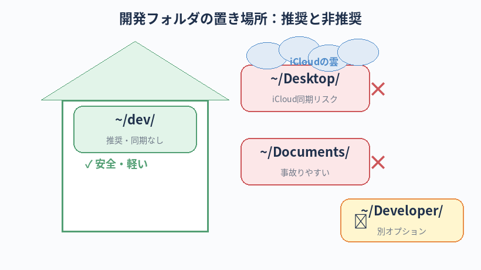

AI を業務で使う上で 守るべきこと と 具体的にどうするかが分かる。
機密情報を扱う場面と、扱わなくていい場面の判断ができる。
開発フォルダをどこに置けばよいか、何をバックアップすればよいか分かる。
AI 運用上のセキュリティ
この章のゴール
この章は飛ばさないでください。業務で AI を使う以上、必ず通って欲しい話です。
難しい話はしません。具体的なルールと、その理由だけ書きます。
そもそも AI に何を渡しているのか
Claude Code に「このファイル直して」と頼むと、AI はそのファイルの中身を読みます。 会社の Anthropic と契約しているサーバーを経由して内容が処理されるので、 あなたが AI に渡したデータは、瞬間的にせよ会社の外（インターネット）に出ていると意識してください。
Anthropic の利用規約では、業務利用プランの場合「学習に利用しない」「短期間でログ削除」などの保護がされていることが一般的ですが、 それでも「会社の外に出した」事実は変わりません。
絶対に AI に渡してはいけないもの
| カテゴリ | 具体例 |
|---|---|
| 顧客・取引先情報 | 取引先の社名、担当者名、連絡先、契約金額、未公開の案件名 |
| 個人情報 | 本名、住所、電話番号、メールアドレス、マイナンバー、身分証画像 |
| 認証情報 | パスワード、API キー、アクセストークン、SSH 鍵、サーバーの管理者情報 |
| 未公開の業務資産 | 未公開の映像・音源、未発表の企画書、内部レビュー前の資料 |
| NDA 案件の情報 | 守秘義務契約のかかっているプロジェクトの内部情報 |
「コードに書いた API キー」が一番事故りやすい
開発をしていると、外部サービスのキーをコードに直接書いてしまうことがあります。 例えば：
// ❌ これをやってはいけない const apiKey = "sk-abc123def456..."; // 直書きは危険
こう書いたファイルを Claude に渡したり、GitHub に push（後述）したりすると、キーが外部に流出する事故になります。
対策は .env ファイルに分離して扱うこと（後述）。
AI に渡してよいもの（基本的にOK）
- 一般的なプログラミング質問・コードの書き方
- 公開情報のみで構成されたコード
- 練習用のダミーデータ
- 業務知識の 抽象化された質問（例：「映像案件の見積もりってどう構成する？」のような一般論）
判断に迷ったら
迷ったら社内のメンター・先輩・情シスに聞くのが一番安全です。
「これって AI に渡してもいい？」と聞くのは、新人なら全く恥ずかしくありません。むしろ評価されます。
「これって AI に渡してもいい？」と聞くのは、新人なら全く恥ずかしくありません。むしろ評価されます。
開発フォルダの適切な場所
結論
本書では ~/dev/ を推奨します。
（~ はホームフォルダ、つまり /Users/あなたのユーザー名 を表す省略記号）
既に開発に慣れていて、Xcode などを使っている人は
~/Developer/（後述）でも構いません。
どちらを採用しても、本書の流れには支障ありません。
避けたい置き場所と、その理由
❌ デスクトップ直下（~/Desktop/）
- iCloud と同期されている場合がある：システム設定 →「Apple ID」→「iCloud Drive」→「デスクトップと書類フォルダ」が ON になっていると、デスクトップ全体が iCloud 配下扱い
- 大量の小さいファイル（コード・依存パッケージ）が同期キューに入り、Mac 全体が重くなる
- アイコンが散らかって視認性が落ち、誤操作（うっかり削除）しやすい
❌ 書類フォルダ（~/Documents/）
- デスクトップと同じく iCloud 同期の対象になっていることが多い
- パス名にスペースを含むため、ターミナル操作で扱いにくい場面がある
❌ Dropbox / Google Drive 配下
- 同期遅延・ファイル競合が発生する
- 機密ファイルが意図せず共有される事故が起きやすい
❌ Downloads / Movies / Pictures など
- 用途が違う。混ざると後で見つけにくい
iCloud 同期下のフォルダで開発していると、大量の小さいファイルが同期キューに詰まって Mac が遅くなるのはよく知られたトラブルです。
開発フォルダは 同期しない場所に置きましょう。
開発フォルダは 同期しない場所に置きましょう。
macOS が用意している特別なフォルダ：~/Developer/
あまり知られていませんが、macOS には ~/Developer/ というホームフォルダ直下の特別なフォルダが用意されています。
- 自分でこのフォルダを作るだけで、Mac が「開発フォルダ」として認識し、専用のアイコン（金槌の絵）に変わります
- ホーム直下なので iCloud には同期されません（同期対象は Desktop / Documents のみ）
- Xcode のテンプレート配置場所などにも使われ、Apple のお作法に最も近い場所
エンジニア寄りの方は ~/Developer/ を採用してもいいですし、もっと打ちやすい ~/dev/ を採用してもいい。
どちらもホーム直下なので、iCloud に巻き込まれません。
本書が ~/dev/ を採用する理由
- iCloud に同期されない：ホーム直下なので Desktop/Documents の同期対象から外れる
- 3文字で打ちやすい：何度も
cdで入る場所なので、タイピング数は重要 - 英数字のみ：日本語フォルダ名にまつわる落とし穴を回避（次節）
- エンジニアコミュニティでも広く使われている慣習に近い
実際のフォルダ構成イメージ
~/dev/
├── poolside-website/
├── client-a-lp/
└── learning/
├── hello-claude/
└── html-practice/

フォルダ名は極力「英数字＋ハイフン」で
| 区分 | 例 |
|---|---|
| ✅ 推奨 | poolside-website / client-a-lp / hello-world |
| ❌ 避けたい | 動画案件_2026 / マイサイト / 開発フォルダ |
日本語フォルダ名を避けたほうがよい理由：
- ターミナルで日本語入力に切り替える手間が増える（タイピング速度がガクッと落ちる）
- GitHub・Firebase・各種 SaaS では URL エンコードされて読みにくい識別子になる（
%E5%8B%95%E7%94%BB...） - 一部のツール・スクリプトが日本語パスをサポートしておらず、原因不明の不具合の温床になる
- 海外メンバーや外注に共有する時の障壁になる
- 後で「英語名に直したい」と気づくと、依存しているパス参照を全部書き換える羽目になる
例外：個人メモや社内資料の置き場（git や CLI を経由しないもの）は日本語名でも構いません。
ただし、コードを置くフォルダだけは英数字 が原則です。
ただし、コードを置くフォルダだけは英数字 が原則です。
案件フォルダの命名ルール（おすすめ）
- すべて小文字 + ハイフン区切り：
poolside-website（スペース・アンダースコアより安全） - 機密情報を名前に入れない：取引先名・契約金額・案件 ID などは避ける（後で GitHub に上げる時に外に出てしまう）
- 用途がわかる単語を入れる：
hello-worldではなくhello-world-tutorialのように、何のためのものか一目でわかると後で便利
初回セットアップ：~/dev/ を作っておく
まだ作っていない人は、ターミナルで以下を実行しておきましょう：
mkdir -p ~/dev cd ~/dev pwd
最後の pwd（print working directory）で /Users/あなた/dev と表示されれば成功。
今後、案件ごとのフォルダはこの ~/dev/ 配下に作っていきます。
機密情報を扱わずに開発するコツ
① .env ファイルを使う
API キーやパスワードは、コードに直書きせず .env という別ファイルに分けます。
API_KEY=sk-abc123def456... DATABASE_URL=postgres://...
そして、コード側ではこのファイルから値を読み取る形にします。
こうすれば、コードを共有しても .env だけ手元に残せます。
② .gitignore ファイルを置く
GitHub などにアップロードしないファイルを宣言するファイル。 各案件フォルダのルートに置きます。
# 機密ファイル .env .env.local *.key *.pem # ログ・キャッシュ *.log node_modules/ .DS_Store # OS生成物 Thumbs.db
最低限このテンプレを各案件で置いておけば、機密ファイルを誤って push する事故をかなり防げます。
③ ダミーデータで開発する
テスト用にデータが要る時は、本物の顧客データを使わずに、適当な架空データを作って使います。 AI にダミーデータを生成してもらうのも有効：
テスト用のダミーデータを10件作ってください。氏名はカタカナ、メールアドレスは example.com、電話番号は 000-0000-XXXX 形式で。
リスクヘッジ：何かあった時の備え
① バージョン管理（git）を使う
git を使えば、ファイルの過去の状態に戻れます。 AI に頼んで「やっぱりさっきの変更、戻したい」と思った時の最後の保険。 詳しくは第11章で扱います。
② Time Machine を ON にする
Mac 標準のバックアップ機能。外付けディスクが要りますが、これだけで人生が救われた人は数えきれないです。 会社支給端末の場合は情シス担当に確認。
③ 大事な作業の前に「コミット」する
git でコードの「セーブポイント」を作る作業を コミットと呼びます。 AI に大きい変更を頼む前に1回コミットしておくと、気軽に「やっぱり戻して」が言えます（git の使い方は第11章）。
「やってはいけない」リスト
- 意味の分からないコマンドを実行しない（特に
sudo、rm -rf、curl ... | bash） - 機密情報を AI に貼り付けない（取引先名・契約金額・実名・連絡先）
- API キーをコードに直書きしない（必ず
.env経由） .envファイルを GitHub に上げない（.gitignoreで除外）- Cursor / Claude Code の Chat 履歴に機密を貼り付けない（履歴に残る）
- 会社支給アカウントを個人用途で使わない（混在事故を防ぐ）
- iCloud 同期下に開発フォルダを置かない
「これやっちゃった！」と思った時
- 機密情報を AI に貼り付けた → 落ち着いて社内のメンター・情シスに即連絡。隠さない
- API キーを GitHub に上げた → そのキーを即無効化（プロバイダの管理画面で「Revoke」「Rotate」）。新しいキーを発行して差し替え
- 大事なファイルを消してしまった → ゴミ箱・Time Machine・git の順で復元を試みる
- 変なコマンドを実行した → 何が起きたか分からないなら、Mac は触らずにメンターに見せる
やらかしを隠すのが一番のリスクです。早く言えば、ほぼ全てのケースで対処できます。
本章のチェックリスト
すべてチェックを付けると「次の章へ」のリンクが解放されます。本章は必読なので、確実に理解してから進んでください。
チェック 0 / 5
次の章へ
重い話が続きましたが、ここまで読めれば AI を業務で使う土台はできました。 次の第8章から、いよいよ実装練習です。最初は HTML で「Hello World」を作ってみます。